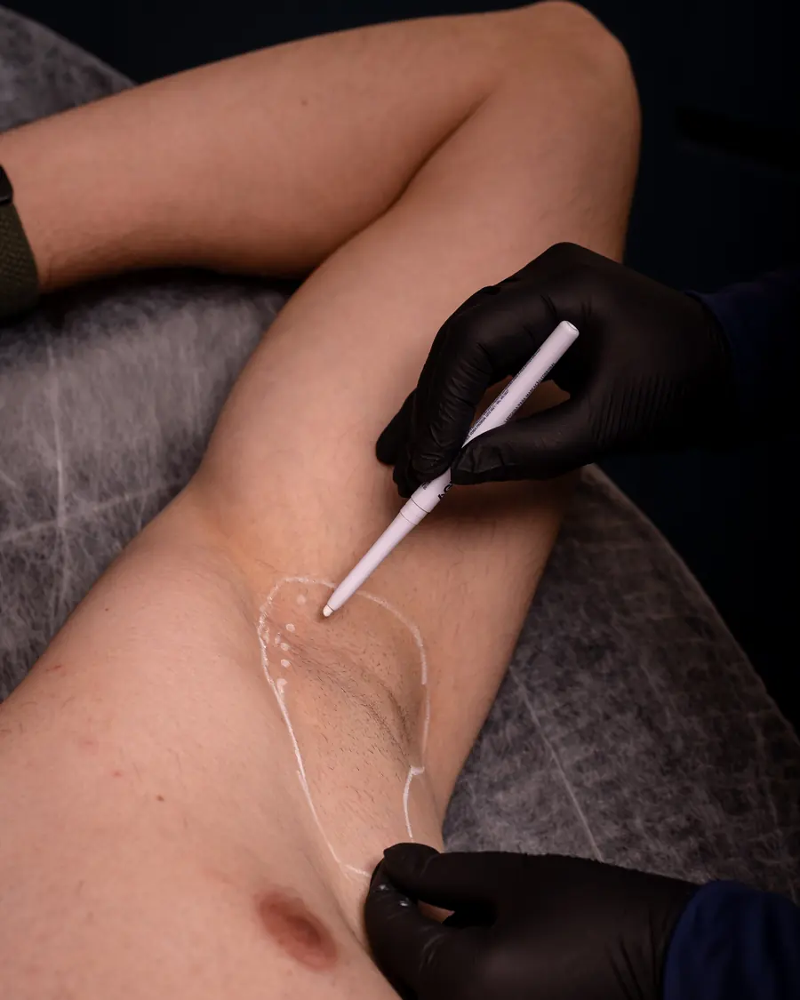

Quando vale procurar uma avaliação
- Suor intenso nas axilas, mãos, pés ou rosto, mesmo sem calor ou esforço.
- Troca de camisa ao longo do dia ou manchas frequentes na roupa.
- Antitranspirantes comuns já não resolvem.
O que é a hiperidrose
Na forma mais comum, a hiperidrose primária, o excesso de suor aparece em regiões específicas, geralmente desde a juventude, e não está ligado a outra doença. Já a hiperidrose secundária pode ser causada por alterações de saúde ou medicamentos e precisa de investigação médica.
Como funciona o tratamento
Um dos tratamentos usados para a hiperidrose localizada é a aplicação de toxina botulínica nas áreas afetadas, como as axilas. Ela reduz temporariamente a ação das glândulas sudoríparas da região. É um procedimento rápido e minimamente invasivo, feito em consultório.
A duração do efeito varia de pessoa para pessoa, e novas aplicações podem ser necessárias.
Como é a avaliação inicial
O profissional pergunta quando o suor começou, em que regiões aparece e em que situações piora, e verifica se há sinais de que a causa seja outra condição de saúde. Se for o caso, recomenda avaliação médica antes de qualquer procedimento.
Cuidados e limitações
- Informe doenças neuromusculares, alergias e medicamentos em uso.
- Pode haver leve desconforto e pequenos hematomas nos pontos de aplicação.
- Nas primeiras horas, evite atividade física intensa e calor excessivo na região.
- O tratamento controla o suor na área tratada; não muda a transpiração do corpo todo.
Perguntas sobre Suor Excessivo (Hiperidrose)
Parar de suar nas axilas faz mal?
O corpo continua transpirando pelas outras regiões, que são responsáveis pela maior parte da regulação da temperatura. O profissional explica isso em detalhe na avaliação.
É a mesma substância usada no rosto?
Sim, é a toxina botulínica, aplicada com técnica e doses específicas para a hiperidrose.
Dá para tratar mãos e pés?
Essas regiões também podem ser avaliadas. A técnica e o desconforto são diferentes dos da axila, e isso é explicado na consulta.
Onde fazer em Goiânia
A Clínica Elementus fica no Jardim Goiás, em Goiânia.
Rua 32, Qd. A22, Lt. 20, nº 1149 – Jardim Goiás, Goiânia – GO, 74805-350 Como chegarHorários
- Segunda a sexta
- 9h às 19h
- Sábado e domingo
- Fechado
As informações desta página têm caráter educativo e não substituem a avaliação individual. A indicação, o número de sessões e os resultados variam de pessoa para pessoa.